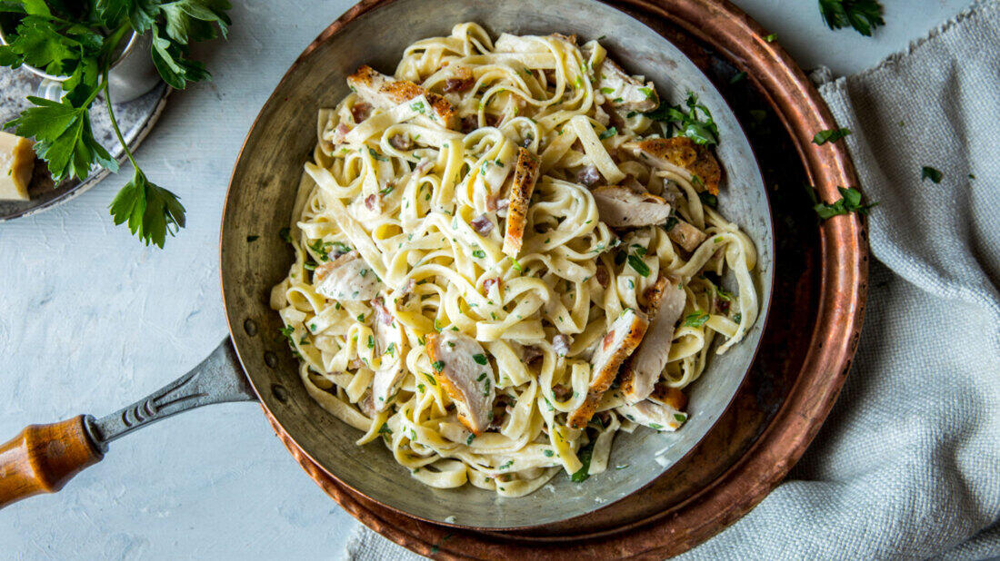

Kremet pasta med kylling

En kremet pasta rik på smak, fløte og parmesan er skikkelig snadder. Husk det lille trikset med å bruke litt av kokevannet fra pastaen i sausen. Stivelsen i vannet er med på å tykne sausen, og sausen oppleves som veldig saftig og kremet - uten at den blir for mektig.
Ingredienser
- 3 stk kyllingfilet
- 150 g bacon
- 350 g tagliatelle
- 1 ss smør
- 2 fedd hvitløk
- 1 stk sjalottløk
- 3 dl fløte
- 2 dl vann
Fremgangsmåte
- Kok opp pastavann. Skjær kyllingen i to på langs (vannrett). Skjær bacon/spekeskinke i små biter. Krydre kyllingen med salt og pepper.
- Varm en stor stekepanne med litt olje. Sprøstek baconet/spekeskinken, legg det over på en tallerken eller i en liten bolle. Stek kyllingen i samme panne. Stek på begge sider til kyllingen har fått en gyllen stekeskorpe og er gjennomstekt. Løft kyllingen ut av pannen så lenge.
- Tørk pannen og tilsett smør, eller dropp smøret og bruk baconfettet som allerede er i pannen. Tilsett hvitløk og sjalottløk og fres til løken blir myk og gyllen.
- Kok pastaen «al dente». Ta vare på 3 dl av kokevannet når du heller av pastaen. Ha fløten og 2 dl av pastavannet over i pannen med løken. Kok opp og la blandingen koke i 2 minutter, eller til den tykner noe. Rør inn parmesan og smak til med salt og pepper.
- Bland pastaen sammen med sausen og rør til sausen klistrer seg til pastaen, den skal bli saftig og delikat. Blir sausen for tykk kan du spe med litt av kokevannet. Virker den tynn vil den tykne etterhvert. Vend inn bacon, kylling i biter og hakket persille. Serveres med det samme!